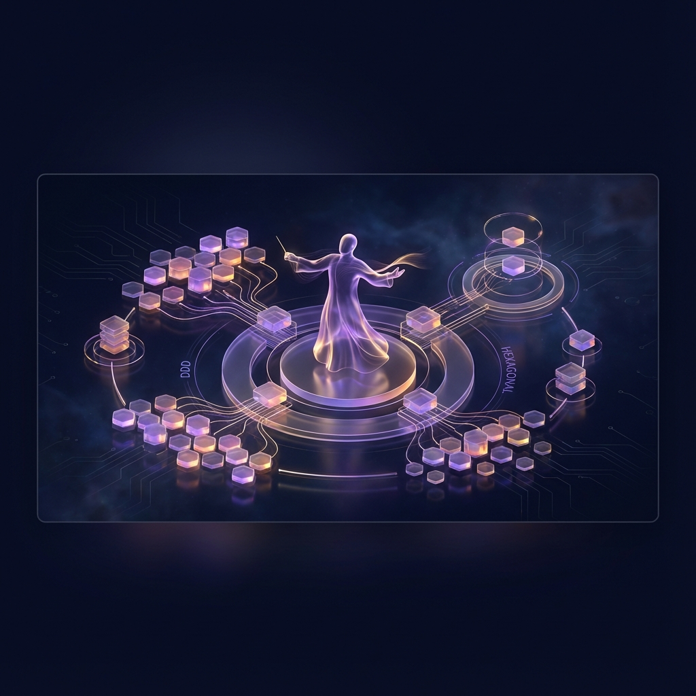
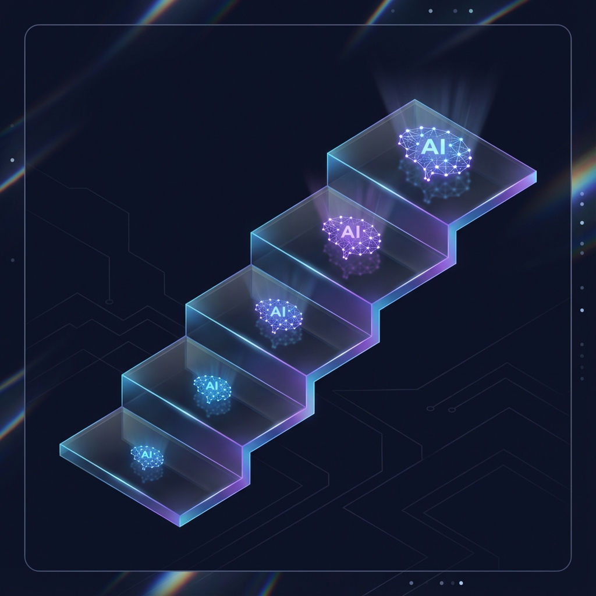

Agent Execution Security & Runtime Governance

Securing stdio: The Hidden Security Threat in Model Context Protocol (MCP)
Most MCP integrations communicate over stdio, bypassing corporate network gateways. Here is how we contained prompt-injection exfiltration at the syscall level using Rust.
Announcing VERA: The Sovereign Trust Protocol for AI Agents
Meet VERA: a cryptographic, Ed25519-signed trust standard providing non-repudiable audit receipts for autonomous agent actions.

The Autonomous Workspace: Zero-Touch Infrastructure for Agent Fleets
How we architected a development environment tethered to a shared memory brain, isolating agent processes while maintaining deterministic state.
Systems Architecture & Domain-Driven Design

Orchestrating the Agentic Symphony: DDD-Driven Microservice Independence
Applying Domain-Driven Design and Hexagonal Architecture to build decoupled agent swarms that scale without state corruption.
The Master Score: Engineering Agentic Harmony with Precise Protocols
Moving beyond ad-hoc prompts towards synchronized architecture. How bounded contexts and clear schemas keep autonomous systems reliable.
AI Engineering Best Practices: Building Reliable Systems with Craftsmanship
Structured planning, acceptance test-driven development, and architectural verification. Practical discipline for production AI systems.

Improving LLM Response Quality with a Tiered Model Ladder
Orchestrating model capability tiers for cost and latency optimization. Heavy reasoning models frame the problem; lightweight models execute.
Applied Pipelines, Multimodal & Compliance
From URL to Video: The Setlist Architecture
How a musician turned systems engineer used structured cues to constrain video generation pipelines and eliminate visual drift.
Multimodal Video Pipeline: Automated Ingestion & Rendering Queues
Whisper speech transcription, autonomous scene cuts, and distributed GPU rendering workers for high-volume video processing.
Zero-Data-Retention: Engineering GDPR-Compliant Conversational AI
Architectural patterns for DSGVO and DiGA compliance. Memory redaction, pseudonymization proxies, and local European inference boundaries.
Stopping the Debug Loop with Self-Healing Autonomous Agents
Automated error recovery and execution loop containment. Freeing engineering focus by letting agents self-correct runtime exceptions.